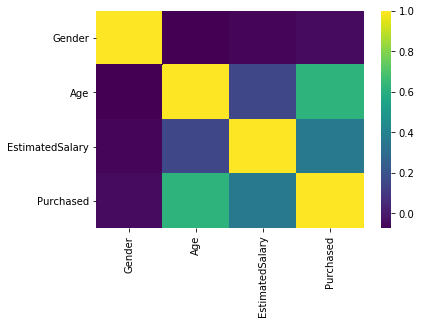
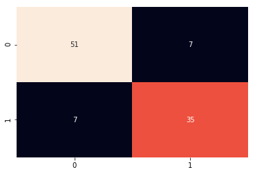
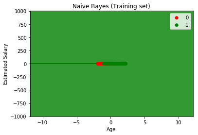
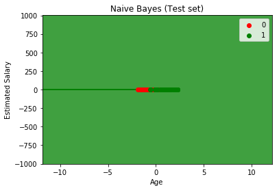

Naivni Bajesovi klasifikatori
Naivni Bajes predstavlja porodicu algoritama za klasifikaciju koji se oslanjaju na Bajesovu teoremu. Ono što ih izdvaja jeste „naivna“ pretpostavka da se svaki atribut (karakteristika) podataka posmatra kao potpuno nezavisan od ostalih u odnosu na ciljnu klasu. Naivni Bajes je generativni algoritam koji modeluje raspodelu podataka unutar klasa, za razliku od diskriminativnih modela koji uče uslovnu verovatnoću klase ili granicu odlučivanja.
** Glavne karakteristike**
Probabilistička osnova: Model izračunava verovatnoću pripadnosti određenoj klasi.
Uslovna nezavisnost: Pretpostavlja se da vrednost jednog atributa ne utiče na verovatnoću drugog, što značajno pojednostavljuje proračun.
Efikasnost: Zahvaljujući jednostavnosti, ovi modeli su veoma brzi za treniranje i primenu.
Na primer, u proceni kreditnog rizika klijenta, faktori kao što su visina mesečnih prihoda, istorija otplate dugova i trenutna zaduženost posmatraju se kao međusobno nezavisni pokazatelji koji utiču na verovatnoću da klijent pripada grupi niskog ili visokog rizika. Slično tome, u filtriranju neželjene elektronske pošte (spam), pojavljivanje reči poput „besplatno“, „nagrada“ ili „kliknite ovde“ tretira se kao skup nezavisnih signala koji povećavaju verovatnoću da poruka bude klasifikovana kao spam. Iako se ove reči često pojavljuju zajedno i mogu biti međusobno povezane, Naivni Bajesov model ih posmatra kao nezavisne atribute, što u praksi često daje veoma dobre rezultate klasifikacije. Iako se zasnivaju na naivnim i pojednostavljenim pretpostavkama, Naivni Bajesovi klasifikatori su u praksi pokazali visok stepen efikasnosti u brojnim složenim realnim primenama.
Ova porodica modela nosi naziv Naivni Bajes upravo zbog pretpostavke o potpunoj nezavisnosti atributa, koja je u realnim uslovima često nerealna. Iako se oslanjaju na moćnu Bajesovu teoremu, smatraju se „naivnim” jer svaku karakteristiku podataka tretiraju kao potpuno izolovan faktor u odnosu na ciljnu klasu. Drugim rečima, Naivni Bajesov klasifikator polazi od pretpostavke da je pojava određene osobine u okviru neke klase nezavisna od pojave bilo koje druge osobine.
Preciznije, Naivni Bajes pretpostavlja da su svi atributi nezavisni uslovno na klasu (engl. conditional independence). Označimo atribute sa \(X_1, X_2, \dots, X_n\). Pretpostavka uslovne nezavisnosti znači da svaki atribut doprinosi verovatnoći pripadnosti instanci određenoj klasi (\(C\)) nezavisno od ostalih atributa, pod uslovom da je klasa poznata:
Zahvaljujući ovoj pretpostavci, Naivni Bajes je jednostavan za implementaciju i razumevanje. Uprkos naivnoj prirodi i pojednostavljenim pretpostavkama, ovi klasifikatori su se u praksi pokazali izuzetno efikasnim u brojnim složenim realnim situacijama.
Teorijski verovatnosni model naivnog Bajesovog klasifikatora
Naivni Bajes se oslanja na Bajesovu teoremu, koja predstavlja koncept iz teorije verovatnoće zasnovan na izračunavanju sa uslovljenim verovatnoćama. Ova teorema omogućava procenu verovatnoće određenog događaja na osnovu prethodnog znanja o uslovima koji mogu uticati na tu verovatnoću.
U kontekstu klasifikacije, Bajesova teorema nam omogućava da izračunamo verovatnoću pripadnosti određenoj klasi na osnovu poznatih atributa pomoću sledeće formule:
gde su:
\(Y\) – Klasa (ciljna promenljiva koju predviđamo),
\(X\) – Skup atributa (obeležja/karakteristike podataka),
\(P(Y \mid X)\) – Verovatnoća klase \(Y\) uslovljena atributima \(X\) (posterior),
\(P(X \mid Y)\) – Verovatnoća pojave atributa uz poznatu klasu (likelihood),
\(P(Y)\) – Verovatnoća klase pre razmatranja podataka (a priori),
\(P(X)\) – Ukupna verovatnoća podataka (evidence).
Suština korišćenja Bajesove teoreme je transformaciju jednačine u alternativne verovatnoće, čime se dobijaju metrike pogodnije za modelovanje.
Primena Bajesovog zaključivanja Koncepcija Bajesovskog zaključivanja datira još od radova Tomasa Bejsa [3], dok se pionirski doprinos njegovoj primeni u domenu klasifikacije teksta pripisuje radu [4]. Bajesovo zaključivanje je dinamičan proces u kojem se početna uverenja neprestano ažuriraju i koriguju čim postanu dostupni novi dokazi ili podaci. Zasnovano na principu ažuriranja verovatnoće pomoću novih dokaza, Bajesovo zaključivanje je ključni alat u radu sa neizvesnim podacima. Njegova svestranost ogleda se u širokoj primeni, kao što je klasifikacija u mašinskom učenju, do analize rizika u finansijama i medicini, genomike u bioinformatici, itd.
Naivni Bajes kao model uslovne verovatnoće
Za svaku instancu problema, predstavljenu vektorom atributa \(x = (x_1, \dots, x_n)\) koji sadrži \(n\) nezavisnih atributa, model izračunava verovatnoću pripadnosti za svako \(k\in \{1, \dots,K\}\), tj. za svaku od mogućih klasa \(\{C_1, C_2,...,C_K\}\), na sledeći način:
Drugim rečima, cilj modela je da, analizirajući posmatrane atribute, proceni uslovnu verovatnoću da data instanca pripada klasi, nakon čega se konačna odluka o klasifikaciji donosi izborom one klase koja ostvaruje maksimalnu verovatnoću za posmatrani vektor ulaznih podataka.
Problem nastaje kada je broj atributa \(n\) veliki ili kada su atributi sa velikim brojem mogućih vrednosti, jer u takvim okolnostima direktno izračunavanje svih uslovnih verovatnoća postaje zahtevno, a nekada i neizvodljivo.
Kako bismo pojednostavili proračune, koristimo Bajesovu teoremu da transformišemo izraz za uslovnu verovatnoću u matematički pogodniji i jednostavniji oblik za racunanje:
gde je \(x=(x_1,x_2,...,x_n)\).
Ova teorema omogućava precizno ažuriranje verovatnoće posmatranog ishoda na osnovu dostupnih informacija koje su sa njim povezane, pri čemu se računski postupak pojednostavljuje transformacijom uslovne verovatnoće \(P(C_k \mid x)\) u ekvivalentan izraz \(\frac{P(C_k) \cdot P(x \mid C_k)}{P(x)}\), čime se dobijaju veličine pogodnije za praktično modelovanje.
U praktičnim primenama fokus je na brojiocu Bajesovog razlomka, jer imenilac \(P(x)\) je fiksiran za datu instancu podataka i ne zavisi od klase \(C_k\) već od fiksnih vrednosti karakteristika \( x_i\), pa imenilac praktično postaje konstanta, zbog čega ne utiče na konačan poredak verovatnoća \(P(C_k \mid x)\) i samim tim niti na izbor optimalne klase. Budući da je cilj klasifikacije identifikacija klase \(C_k\) koja maksimizuje aposteriornu verovatnoću \(P(C_k \mid x)\), možemo se fokusirati isključivo na brojilac Bajesovog izraza.
Formalno, klasifikator bira klasu \(\hat{y}\) prema pravilu maksimalne aposteriorne verovatnoće (engl. Maximum A Posteriori):
Direktna primena ove jednačine u praksi izuzetno je zahtevna zbog ekstremne složenosti proračuna za svaku moguću kombinaciju atributa. Takav pristup bi u realnim uslovima zahtevao procenu ogromnog broja parametara i oslanjanje na nerealno velike skupove podataka za obučavanje, što proces modelovanja čini praktično neizvodljivim. Zbog toga, uvode se dve ključne pretpostavke kako bi se pojednostavio proračun.
Koristimo operaciju argmax kako bismo identifikovali argument (u ovom slučaju klasu \(C_k\) ) koji maksimizuje posmatranu funkciju (odnosno aposteriornu verovatnoću \(P(C_k) P(x \mid C_k)\)). Ovaj izraz označava da je naša predviđena klasa \(\hat{y}\) upravo ona vrednost iz skupa svih mogućih klasa \(C\) za koju je izračunata verovatnoća \(P(C_k) P(x \mid C_k)\) najveća.
Dalje, primenom formule za uslovnu verovatnoću važi sledeće: \(P(C_k) P(x \mid C_k)=P(C_k, x_1, \dots, x_n).\)
Primena lančanog pravila verovatnoće omogućava razlaganje zajedničke verovatnoće na proizvod uslovnih verovatnoća: \begin{aligned} p(C_k, x_1, \dots, x_n) &= p(C_k) , p(x_1, \dots, x_n \mid C_k) \ &= p(C_k) , p(x_1 \mid C_k) , p(x_2, \dots, x_n \mid C_k, x_1) \ &= p(C_k) , p(x_1 \mid C_k) , p(x_2 \mid C_k, x_1) , p(x_3, \dots, x_n \mid C_k, x_1, x_2) \ &= p(C_k) , p(x_1 \mid C_k) , p(x_2 \mid C_k, x_1) \dots p(x_n \mid C_k, x_1, x_2, \dots, x_{n-1}) \end{aligned}
Ova dekompozicija značajno pojednostavljuje model, a uz pretpostavku uslovne nezavisnosti atributa dolazi se do krajnje jednostavnog naivnog Bajesovog modela.
Naivna Bajesovska pretpostavka
Pretpostavimo da je svaka karakteristika \(x_i\) uslovno nezavisna od svih ostalih karakteristika \( x_j\) za \(j \neq i\), pod uslovom da je poznata kategorija \(C\). Ova pretpostavka predstavlja temelj naivnog Bajesovog modela, jer dozvoljava razlaganje zajedničke verovatnoće na jednostavan proizvod pojedinačnih uslovnih verovatnoća. Pa se uz pretpostavku o uslovnoj nezavisnosti atributa, uslovna raspodela po promenljivoj klase \(C\)h može se izraziti kao proizvod pojedinačnih uslovnih verovatnoća pomnoženih sa prior verovatnoćom klase:
i tako dalje, za sve \(i \neq j, k, l\).
Na osnovu prethodnih koraka, matematičku strukturu modela naivnog Bajesovog klasifikatora možemo definisati na sledeći način:
Koristimo simbol proporcionalnosti \(\propto\) jer se u proračunu oslanjamo na aproksimaciju; kao što je ranije istaknuto, imenilac \(P(x)\) je fiksiran za datu instancu podataka, on ne utiče na relativni poredak aposteriornih verovatnoća \(P(C_k \mid x)\), a samim tim ni na izbor optimalne klase.
Konacno pod pretpostavkama o nezavisnosti atributa, uslovna raspodela \(P(C_k \mid x_1, \dots, x_n)\) može se napisati u sledećoj formi:
Kao što je prethodno razmatrano, kada su vrednosti obeležja poznate (odnosno fiksirane za dati uzorak), verovatnoća \(P(X)\) poprima karakteristike konstante koja utiče na proces izbora klase. U stručnoj literaturi, \(P(x)\) se može sresti i pod nazivom faktor skaliranja (engl. scaling factor). Budući da je ovaj faktor identičan za sve klase koje se porede, on se u praksi često izostavlja prilikom pronalaženja klase sa maksimalnom verovatnoćom.
Na osnovu dosadašnja razmatranja Bajesov klasifikator predstavlja funkciju koja dodeljuje oznaku klase \(\hat{y} = C_k\), za neko \(k\in \{1, \dots, K\}\), koristeći jednačinu:
Funkcija
Koraci postupkanaivnog Bajesovog klasifikatora
Izračunavanje a priori verovatnoće za svaku klasu:
\(P(C_k)\)Izračunavanje verovatnoće atributa uz poznatu klasu (likelihood) za svako obeležje:
\(P(X_i \mid C_k)\)Množenje svih likelihood vrednosti sa prior verovatnoćom kako bi se dobila posteriorna verovatnoća:
\(P(C_k \mid X_1, X_2, \dots, X_n)\)Izbor klase sa najvećom verovatnoćom kao konačne odluke klasifikatora.
Primer iz prakse: Primena Naivnog Bajesovog klasifikatora u proceni kreditnog rizika
Predstavićemo primer koji ilustruje primenu Naivnog Bajesovog klasifikatora u proceni kreditnog rizika. Jedna srednje velika banka, suočena sa rastom zahteva za brze gotovinske kredite i sporom manuelnom obradom, uvela je Naivni Bajesov klasifikator kako bi automatizovala i ubrzala procenu kreditnog rizika.
Banka je radi veće efikasnosti uvela Naivni Bajesov klasifikator, koristeći istorijske podatke o klijentima, kao što su: visina prihoda i vrsta radnog odnosa, dužina radnog staža, evidencija prethodnih zaduženja i kašnjenja u otplati obaveza, itd.
Metodologija rada modela:
Procena a priori verovatnoća: Određuju se početne verovatnoće pripadnosti klasa na osnovu udela „dobrih“ i „loših“ platiša u istorijskim podacima.
Uz pretpostavku uslovne nezavisnosti obeležja, procenjuju se uslovne verovatnoće po atributima.
Konačna klasifikacija klijenta u grupe niskog ili visokog kreditnog rizika.
Rezultati i poslovni efekti:
Povećana efikasnost: Vreme obrade kreditnih zahteva smanjeno je sa više sati na svega nekoliko sekundi.
Bolja raspodela resursa: Analitičari su rasterećeni rutinskih procena i mogu se usmeriti na složenije i granične slučajeve.
Brže odobravanje kredita: Klijenti sa procenjenim niskim rizikom dobijaju sredstva gotovo trenutno, čime banka ostvaruje konkurentsku prednost na tržištu.
I pored pojednostavljenih pretpostavki, modeli poput Naivnog Bajesovog klasifikatora mogu imati značajnu praktičnu vrednost u finansijskom sektoru, naročito kao alati za brzu preliminarnu procenu i selekciju klijenata.
Terminologija
U literaturi se ovi modeli ponekad pojavljuju pod raznim imenima ([1], [2]), pri čemu svaki od njih upućuje na primenu Bajesove teoreme. Neki od tih naziva su: naivni Bajesov klasifikator (eng. Naive Bayes classifier), naivni Bajes (eng. Naive Bayes), naivni Bajesov model (eng. Naive Bayes model), Bajesov klasifikator sa pretpostavkom nezavisnosti atributa (eng. Independent Bayes classifier), jednostavni Bajesov klasifikator (eng. Simple Bayesian classifier), itd.
Zanimljivo je da se u neformalnim krugovima ponekad koristi i naziv idiotski Bajesov model (idiot Bayes model) ([2]). Ovaj izraz predstavlja ironičnu reakciju na upotrebu Bajesovog imena u modelu zasnovanom na izrazito pojednostavljenim pretpostavkama.
Tipovi naivnog Bajesovog klasifikatora
Postoji više varijanti naivnog Bajesovog klasifikatora, koje se međusobno razlikuju u zavisnosti od pretpostavljene distribucije ulaznih podataka i od tipa obeležja (kontinuirana, diskretna ili binarna).
Gausov (Gaussian) naivni Bajes
Ovaj model se primenjuje u slučajevima kada su atributi neprekidne varijable, koje prate normalnu (Gausovu) raspodelu unutar svake klase. Važno je naglasiti da je ovaj model zasnovan na pretpostavci o podacima da svaki atribut potiče iz uslovne Gaussove raspodele karakteristične za odgovarajuću klasu. Gaussian Naive Bayes pristupa analizi tako što podatke prvo grupiše prema klasama. Zasvaku klasu \(c\) vrši procena parametara normalne raspodele: izračunava se srednja vrednost \(\mu_c\) i varijansa \(\sigma_c^2\). Ovi parametri nam omogućavaju da definišemo Gaussovu funkciju gustine za svaku klasu.Za novu instancu \(\tilde{x}\), model primenjuje funkciju gustine verovatnoće normalne raspodele kako bi procenio verovatnoću da posmatrana vrednost pripada određenoj klasi klasi \(C_k\):
Gausov naivni Bajes se široko primenjuje zbog jednostavne implementacije i dobrih performansi na manjim setovima podataka. Njegova snaga najviše dolazi do izražaja kod atributa koji prate normalnu raspodelu, kao što su starost, cena ili biološki markeri. Upravo zato se ovaj model uspešno primenjuje u oblastima poput finansijske analize, biometrije i medicinske dijagnostike, itd.
Multinomni (Multinomial) naivni Bajes
Multinomijalni model nudi rešenje za klasifikaciju podataka koji nisu numerički (poput teksta ili kategorija), tako što ih transformiše u formate pogodne za statističku obradu. Koristi se za rad sa diskretnim podacima, npr. kada radimo sa tekstualnim podacima, pa atributi kvantifikuju pojavljivanje reči. Ovaj model se primenjuje u slučajevima kada atributi predstavljaju frekvencije ili broj pojavljivanja elementa u posmatranom skupu. Sam naziv modela reflektuje njegove ključne karakteristike: termin ’naivni’ odnosi se na pretpostavku o međusobnoj nezavisnosti atributa (poput reči u tekstu), dok ’multinomijalni’ ukazuje na to da model uzima u obzir učestalost njihovog pojavljivanja. Klasifikacija se vrši na osnovu poređenja frekvencija reči u različitim grupama. Izračunavanje verovatnoće pripadnosti poruke određenoj klasi u ovom modelu direktno se oslanja na multinomijalnu raspodelu: $\(p(x \mid C_k) = \frac{\left(\sum_i x_i\right)!}{\prod_i x_i!} \prod_i p_{ki}^{\,x_i}.\)$ Multinomijalni Naivni Bajes omogućava izuzetno brzu klasifikaciju teksta. Upravo ga ta efikasnost čini jednim od najpraktičnijih rešenja za širok spektar aplikacija u okviru veštačke inteligencije i mašinskog učenja. Njegova praktična vrednost najviše dolazi do izražaja u sferi obrade prirodnih jezika, gde se uspešno primenjuje za filtriranje nepoželjne elektronske pošte (spam-a), analizu sentimenta u recenzijama korisnika, kao i za automatsko razvrstavanje novinskih članaka ili obimne pravne dokumentacije u tematske kategorije.Bernulijev (Bernoulli) naivni Bajes
Ovaj model se primenjuje u slučajevima kada su atributi binarne prirode, odnosno kada označavaju prisustvo ili odsustvo određene karakteristike. Tipično se koristi za binarnu klasifikaciju teksta zasnovanu na prisustvu ili odsustvu specifičnih termina unutar dokumenta, reč se u dokumentu ili pojavljuje ili ne. Dok multinomijalni model prati kvantitet, Bernulijev model se fokusira na samu pojavu termina ili odsustvo instance. Upravo zbog toga što modeluje i ono one koji nisu prisutni u datoj tekstu, ovaj model se pokazao kao izuzetno rešenje za klasifikaciju kratkih formi, poput naslova ili kratkih poruka. Neka je \(x_i\) logička (Booleova) promenljiva koja označava prisustvo ili odsustvo \(i\)-te reči iz vokabulara, i neka je \(p_{ki}\) verovatnoća da klasa \(C_k\) generiše termin \(w_i\), tada: $\(p(x \mid C_k) = \prod_{i=1}^{n} p_{ki}^{\,x_i} (1 - p_{ki})^{(1 - x_i)}.\)$ Bernulijev naivni Bajes odlikuje niz prednosti: jednostavan je za implementaciju, algoritamska efikasanost omogućava veliku brzinu rada čak i pri obradi visokodimenzionalnih podataka,robusan na malim uzorcima i minimalnim memorijskim zahtevima. U obradi prirodnog jezika, on se izdvaja kao pouzdano rešenje koje često prevazilazi očekivanja u pogledu tačnosti predikcije i neretko parira znatno kompleksnijim metodama.
Koju ćemo varijantu algoritma primeniti, uslovljeno je samim karakterom podataka i statističkom distribucijom atributa uključenih u proces obučavanja.
Implementacija naivnog Bajesovog klasifikatora u Scikit-learn
U okviru biblioteke Scikit-learn, postoje već gotove implementacije za sva tri nabrojana Bajesovog klasifikatora, naime: implementacija GaussianNB za Gausov naivni Bajes, implementacija BernoulliNB za Multinomni naivni Bajes i implementacija MultinomialNB za Bernulijev naivni Bajes. Dok je GaussianNB univerzalan za numeričke podatke, BernoulliNB i MultinomialNB se prvenstveno koriste u klasifikaciji tekstualnih podataka.
Osnovna razlika između varijanti naivnog Bajesovog algoritma proističe iz načina na koji modeli interpretiraju ulazne atribute. BernoulliNB se fokusira na binarnu prisutnost obeležja, tj. na prisustvo ili odsustvo karakteristike. MultinomialNB uzima u obzir intenzitet ili broj ponavljanja svakog obeležja, model izračunava prosečnu vrednost za svaki atribut po klasama. GaussianNB je prilagođen složenijim distribucijama, i pored prosečne vrednosti, on skladišti i standardnu devijaciju svakog obeležja po klasama.
Napomena o diskretizaciji (Bining)
U radu sa kontinuiranim atributima, često se kontinuirani podaci pretvaraju u kategorije (engl. binning) kako bi se mogli koristiti kao binarne varijable. Iako neki izvori tvrde da je to obavezno za Naive Bayes, to je zapravo zabluda. Glavni nedostatak ove prakse je potencijalno odbacivanje značajnih informacija koje su sadržane u originalnim, kontinuiranim distribucijama.
Razlika između Naivnih Bajesovih modela
Tip modela |
Tip podataka |
Predmet modelovanja |
|---|---|---|
BernoulliNB |
binarne promenljive |
prisutnost ili odsutnost osobine |
MultinomialNB |
diskretne promenljive |
frekvencija pojavljivanja osobina |
GaussianNB |
kontinuirane promenljive |
normalna raspodela |
Procena a priori verovatnoća
Procena a priori je jedan od prvih koraka u okviru ovog algoritma. A priori verovatnoća klase \(C_k\) označava se kao \(P(C_k)\) i računa se kao količnik broja uzoraka te klase i ukupnog broja uzoraka u skupu.
U praksi se a priori verovatnoće najčešće procenjuju na osnovu učestalosti klasa u trening skupu. Verovatnoća klase \(C_k\) dobija se deljenjem broja uzoraka te klase sa ukupnim brojem uzoraka:
gde je:
\(N_k\): broj uzoraka koji pripadaju klasi \(C_k\) u trening skupu.
\(N\): ukupan broj uzoraka u trening skupu.
Jedan od najvećih izazova ovog pristupa je pojava instance koja postoji u test setu, ali se nikada nije pojavila u trening setu za određenu klasu, ili kod malog broja uzoraka ili neuravnoteženih klasa. Rešenje je Laplasovo poravnanje (engl. Laplace smoothing), prema kome se verovatnoća \(P(C_k) \) računa kao: $\(P(C_k) = \frac{N_k + \alpha}{N + \alpha K},\)$
gde je:
\(\alpha\): parametar poravnanja (obično \(\alpha = 1\)),
\(K\): ukupan broj različitih klasa.
Prednosti i mane algoritma Naivni Bajes
Prednosti algoritma Naivni Bajes Naivni Bajesov klasifikator je, uprkos svojoj jednostavnosti, jedan od najefikasnijih algoritama u mašinskom učenju. Njegove ključne prednosti su:
Računska efikasnost: Zahvaljujući pretpostavci o nezavisnosti atributa, proces obuke i predviđanja je izuzetno brz. To ga čini idealnim za rad u realnom vremenu i nad velikim skupovima podataka.
Jednostavna implementacija: Algoritam se zasniva na direktnoj primeni Bajesove teoreme i osnovnoj statistici, što olakšava razvoj i otklanjanje grešaka.
Mala potreba za podacima: Za razliku od kompleksnijih modela (poput dubokih mreža), Naivni Bajes daje stabilne i pouzdane rezultate čak i kada raspolažemo sa relativno malim brojem trening primera.
Izuzetna skalabilnost: Veoma se lako nosi sa problemima visoke dimenzionalnosti, gde je broj atributa ogroman (npr. klasifikacija teksta sa desetinama hiljada reči).
Robustnost na šum: Nezavisna procena verovatnoća za svaki atribut pojedinačno čini model otpornijim na irelevantne karakteristike i šum u podacima.
Fleksibilnost tipova podataka: Postoje specijalizovane varijante algoritma prilagođene različitim distribucijama:
Gaussian: za kontinualne (numeričke) podatke.
Multinomial: za diskretne učestalosti (npr. broj pojavljivanja reči).
Bernoulli: za binarne atribute (prisustvo/odsustvo karakteristike).
Visoka preciznost u specifičnim domenima: Iako je pretpostavka o nezavisnosti atributa „naivna”, algoritam u praksi često postiže rezultate koji su konkurentni znatno složenijim modelima, posebno u detekciji spama i analizi sentimenta.
Mane algoritma Naivni Bajes Iako je Naivni Bayesov klasifikator izuzetno efikasan, njegova primena u praksi prati nekoliko značajnih ograničenja:
Nerealna pretpostavka o nezavisnosti atributa – Njegova osnovna pretpostavka da su svi atributi međusobno potpuno nezavisni retko je ispunjena kod realnih podataka.
Problem nultih verovatnoća (engl. Zero Frequency) – Ukoliko se određena vrednost atributa ne pojavi u okviru neke klase tokom treninga, verovatnoća te kombinacije postaje nula. To može „poništiti” celokupan Bayesov proizvod, što zahteva korišćenje tehnika poput Laplaceovog zaglađivanja.
Pristrasnost ka jednostavnijim rešenjima – Zbog svoje linearne prirode, model teško identifikuje kompleksne, nelinearne i višeslojne zavisnosti između podataka koje savremeniji algoritmi (poput neuronskih mreža) lakše prepoznaju.
Inferiorne performanse na kompleksnim skupovima – U poređenju sa robusnijim metodama (npr. algoritam slučajne šume, mašine sa potpornim vektorima, itd.) Naivni Bayes često postiže manju preciznost kada su granice između klasa složene.
Zavisnost od obrade podataka – Kvalitet rezultata direktno zavisi od izbora karakteristika.
Primene Naivnog Bajesa
Naivni Bajesovi modeli predstavljaju jedan od najranije razvijenih pristupa u oblasti mašinskog učenja, a njihovo intenzivno proučavanje traje još od pedesetih godina XX veka. Ovaj metod se pominje u kontekstu pretraživanja informacija, doduše pod drugačijim nazivom, početkom šezdesetih godina ([2]). Uprkos svojoj jednostavnosti i ’naivnim’ pretpostavkama na kojima počiva, ovaj algoritam ostvaruje izuzetno visoke performanse u rešavanju brojnih složenih problema iz stvarnog sveta.
Naivni Bajes nalazi značajnu primenu u velikom broju domena, a neke od oblasti primene su:
Klasifikacija teksta, dokumenata i vesti: Za automatsku ategorizaciju dokumenata na osnovu analize frekvencije reči i ključnih pojmova u tematske celine poput zabava, sporta, politika, tehnologije, itd.
Filtriranje neželjene elektronske pošte: Jedna od najpoznatijih primena ovog modela odnosi se na automatsko filtriranje elektronske pošte na neželjene (engl. spam) poruke i legitimne, na osnovu prethodnih podataka i karakterističnih obrazaca pojavljivanja reči.
Analiza sentimenta: Ovaj algoritam se može koristiti za analizu sentimenta, odnosno analizom frekvencije reči u recenzijama ili objavama na društvenim mrežama, algoritam određuje da li je neki tekst pozitivan, negativan ili neutralan.
Sistemi preporuka: U kontekstu sistema za preporučivanje, analizom prethodnih aktivnosti i preferencija, ovaj algoritam identifikuje sadržaj ili proizvode koji bi korisniku mogao biti interesantan.
Detekcija grešaka ili prevara: Finansijske institucije koriste ovaj model za za identifikaciju prevara, anomalij, potencijalnih prevara, i sumnjivih transakcija u realnom vremenu.
Bioinformatika: Za brzo izdvajanje relevantnih informacija i prepoznavanje obrazaca iz velikih i kompleksnih biomedicinskih i genetičkih skupova podataka.
Medicinska dijagnostika: Na osnovu prisutnih simptoma, rezultati testova i demografske karakteristike pacijenata, algoritam pomaže u postavljanju dijagnoze.
**Mogućnosti poboljšanja Naivnog Bajesovog klasifikatora **
Ukoliko se u skupu podataka pojavi nulta frekvencija, neophodno je koristiti tehnike zaglađivanja, npr. Laplasovu korekciju koja je već pomenuta.
Kada atributi ne prate normalnu raspodelu, potrebno je primeniti transformaciju ili druge metode kako bi se približile normalnoj raspodeli.
Iako bi se moglo razmotriti korišćenje metoda kombinovanja klasifikatora, poput ensembling-a, bagging-a ili boosting-a, ove tehnike uglavnom ne donose poboljšanje, jer su namenjene smanjenju varijanse, dok Naivni Bajes nema izražen problem varijanse.
Ukoliko postoji problem neuravnoteženih klasa, kako bi se izbegla favorizacija većinskih klasa i ignorisanje retkih klasa, mogu se primeniti metode kao što su metoda rebalansiranja podataka (poput oversampling-a, undersampling-a ili SMOTE tehnike), modifikacijom apriornih verovatnoća (engl. prior probabilities), komplementarni naivni Bajes (engl. Complement Naive Bayes), koji je specifično dizajniran za rad sa neuravnoteženim podacima., itd.
S obzirom na to da model Naivnog Bajesa ima ograničene mogućnosti za optimizacija hiperparametara (poput parametra zaglađivanja \(alpha\), kao aprior verovatnoća klasa, i praga odlučivanja), akcenat treba staviti na kvalitetnu predobradu podataka.
Treba eliminisati međusobno visoko korelisane karakteristike, jer veštački uvećavaju svoj uticaj na model, što narušava objektivnost njihovog značaja.
Konfiguracija i obuka modela Naivnog Bajesovog klasifikatora
Za prikaz rada modela Naivnog Bajesovog klasifikatora koristićemo German Credit Dataset (detalje o bazi možete pronaći ovde, koja sadrži podatke o korisnicima internet platforme i prati njihovu interakciju sa digitalnim oglasima. Primarni fokus je na analizi potrošačkog ponašanja, odnosno na odluci korisnika o kupovini proizvoda neposredno nakon izlaganja reklami.
Pošto ciljna promenljiva može imati samo dve vrednosti, ovo je binarni klasifikacioni zadatak koji ima cilj da na osnovu karakteristika korisnika predvidi njihovu ciljnu promenljivu pod nazivom Purchased, koja uzima dve vrednosti:
0– korisnik nije izvršio kupovinu1– korisnik je izvršio kupovinu
Opis baze
Skup podataka obuhvata 400 instanci opisanih kroz 4 numerička atributa i jednu ciljnu promenljivu. Svaki zapis predstavlja klijenta koji je bio izložen marketinškoj kampanji. Na osnovu datih karakteristika analizira se verovatnoća kupovine proizvoda, pa se vrši binarna klasifikacija klijenata, tj. predviđa se da li je klijent kupio proizvod ili nije kupio proizvod.
Skup podatka se sastoji od pet ključnih promenljivih koje opisuju profil korisnika i njegovu interakciju sa oglasom:
# |
Originalni naziv |
Opis na srpskom |
Tip podatka |
|---|---|---|---|
1 |
User ID |
Identifikator korisnika. |
Numerički |
2 |
Gender |
Pol |
Kategorički |
3 |
Age |
Starost |
Numerički |
4 |
Estimated Salary |
Procenjena zarada |
Numerički |
5 |
Purchased |
Ciljna promenljiva |
Numerički |
Priprema radnog okruženja i Opis korišćenih biblioteka
Pre same implementacije modela potrebno je učitati odgovarajuće softverske biblioteke. Svaka od korišćenih biblioteka ima jasno definisanu ulogu u procesu mašinskog učenja, kao i u našem algoritmu za izgradnju drveta odlučivanja.
Pandas (
pd): za rad sa tabelarnim podacima (DataFrames). Koristi se za učitavanje podataka (na primer iz.csvdatoteka), njihovo čišćenje i efikasnu manipulaciju tabelarnim strukturama.NumPy (
np): za efikasan rad sa višedimenzionalnim nizovima (arrays) i izvođenje brzih numeričkih i matematičkih operacija.Matplotlib pyplot (
plt): za grafički prikaz podataka i crtanje grafikona.ListedColormap (
ListedColormap): za definisanje prilagođenih kolor-mapa pri vizuelizaciji klasifikacionih regiona.Seaborn (
sns): za napredniju i estetski uređeniju statističku vizuelizaciju podataka.
Moduli iz biblioteke scikit-learn koriste se za pripremu podataka, treniranje modela i evaluaciju:
LabelEncoder (
LabelEncoder): za kodiranje kategoričkih promenljivih u numerički oblik.StandardScaler (
StandardScaler): za standardizaciju numeričkih atributa.train_test_split (
train_test_split): za podelu skupa podataka na trening i test skup.GaussianNB (
GaussianNB): implementacija Gausovog naivnog Bajesovog klasifikatora.
Metrike za procenu performansi modela:
Metrics (
metrics): modul koji sadrži standardne metrike za ocenu kvaliteta modela.accuracy_score (
accuracy_score): izračunava tačnost klasifikacije.classification_report (
classification_report): sadrži pregled metrika preciznosti, odziva, F1-score i podrške po klasama.precision_recall_curve (
precision_recall_curve): koristi se za analizu odnosa preciznosti i odziva.confusion_matrix (
confusion_matrix): prikazuje matricu konfuzije klasifikatora.f1_score (
f1_score): za izračunavanje F1 mere.
import pandas as pd
import numpy as np
import matplotlib.pyplot as plt
from matplotlib.colors import ListedColormap
import seaborn as sns
from sklearn.preprocessing import LabelEncoder
from sklearn.preprocessing import StandardScaler
from sklearn.model_selection import train_test_split
from sklearn.naive_bayes import GaussianNB
from sklearn import metrics
from sklearn.metrics import accuracy_score
from sklearn.metrics import classification_report
from sklearn.metrics import precision_recall_curve
from sklearn.metrics import confusion_matrix
from sklearn.metrics import f1_score
Učitavanje skupa podataka U ovom koraku vršimo učitavanje podataka u radno okruženje pomoću biblioteke pandas:
baza=pd.read_csv('Social_Network_Ads.csv')
Pozovanje metode.info() jedan je od prvih koraka u analizi podataka. Njenim pozivanjem dobijamo izveštaj o strukturi posmatranog skupa podataka, uključujući tip objekta, opsega indeksa, broj redova, listu kolona, broj popunjenih vrednosti za svaki atribut (što nam omogućava odentifikaciju nedostajućih vrednosti), tip podataka svake kolone, količinu memorije koju zauzima skup podataka.
Metod
.info()je koristan za brzu proveru nedostajućih vrednosti i tipova podataka u skupu podataka.
baza.info()
<class 'pandas.core.frame.DataFrame'>
RangeIndex: 400 entries, 0 to 399
Data columns (total 5 columns):
User ID 400 non-null int64
Gender 400 non-null object
Age 400 non-null int64
EstimatedSalary 400 non-null int64
Purchased 400 non-null int64
dtypes: int64(4), object(1)
memory usage: 15.7+ KB
Ako se u zagradama ne navede broj, metoda baza.head() podrazumevano prikazuje prvih 5 redova skupa podataka.
Ukoliko se u zagradama navede broj, prikazuju se prvih onoliko redova koliko je zadato. Analogno tome, metoda baza.tail() prikazuje poslednjih 5 redova ako broj nije preciziran, odnosno poslednjih onoliko redova koliko je navedeno u zagradama.
baza.head(7)
| User ID | Gender | Age | EstimatedSalary | Purchased | |
|---|---|---|---|---|---|
| 0 | 15624510 | Male | 19 | 19000 | 0 |
| 1 | 15810944 | Male | 35 | 20000 | 0 |
| 2 | 15668575 | Female | 26 | 43000 | 0 |
| 3 | 15603246 | Female | 27 | 57000 | 0 |
| 4 | 15804002 | Male | 19 | 76000 | 0 |
| 5 | 15728773 | Male | 27 | 58000 | 0 |
| 6 | 15598044 | Female | 27 | 84000 | 0 |
Kada pozovemo baza.describe() dobijamo statistički sažetak numeričkih kolona skupa podataka:
count: Broj ne-nedostajućih vrednosti u koloni.
mean: Srednja vrednost (prosek) kolone.
std: Standardna devijacija (koliko se vrednosti prosečno udaljavaju od srednje vrednosti).
min: Najmanja vrednost u koloni.
25%: Donji kvartil (prva četvrtina podataka).
50%: Medijana (srednja vrednost).
75%: Gornji kvartil (treća četvrtina podataka).
max: Najveća vrednost u koloni.
Napomena: Standardna metoda
describe()analizira isključivo numeričke kolone. Kako biste dobili uvid i u kategoričke podatke, koristite argumentinclude='all', što dodatno vraća:
unique – broj jedinstvenih vrednosti u koloni
top – najčešća vrednost (moda)
freq – frekfencija ponavljanja najčešće vrednosti
baza.describe()
| User ID | Age | EstimatedSalary | Purchased | |
|---|---|---|---|---|
| count | 4.000000e+02 | 400.000000 | 400.000000 | 400.000000 |
| mean | 1.569154e+07 | 37.655000 | 69742.500000 | 0.357500 |
| std | 7.165832e+04 | 10.482877 | 34096.960282 | 0.479864 |
| min | 1.556669e+07 | 18.000000 | 15000.000000 | 0.000000 |
| 25% | 1.562676e+07 | 29.750000 | 43000.000000 | 0.000000 |
| 50% | 1.569434e+07 | 37.000000 | 70000.000000 | 0.000000 |
| 75% | 1.575036e+07 | 46.000000 | 88000.000000 | 1.000000 |
| max | 1.581524e+07 | 60.000000 | 150000.000000 | 1.000000 |
Predobrada podataka (engl.Preprocessing)
Cilj predobrade je priprema podataka na način koji omogućava efikasnu analizu i modeliranje, uz uklanjanje nebitnih atributa. U ovom slucaju atribut ’User ID’ koji označava jedinstveni korisnički broj ne doprinosi preciznosti predviđanja, pa je izostavljen iz modela jer ne utiče na samu odluku o kupovini.
Nakon izvršenih promena u okviru predobrade, ponovo pozivamo funkciju head() kako bismo stekli uvid da li je uklanjanje kolona uspešno primenjeno.
baza.drop(columns = ['User ID'], inplace=True)
baza.head()
| Gender | Age | EstimatedSalary | Purchased | |
|---|---|---|---|---|
| 0 | Male | 19 | 19000 | 0 |
| 1 | Male | 35 | 20000 | 0 |
| 2 | Female | 26 | 43000 | 0 |
| 3 | Female | 27 | 57000 | 0 |
| 4 | Male | 19 | 76000 | 0 |
Numeričko kodiranje (engl. Label Encoding) Numeričko kodiranje omogućava konverziju kategoričkih podataka u brojeve.
LabelEncoder(): Inicijalizuje objekat zadužen za mapiranje tekstualnih kategorija u celobrojne vrednosti.le.fit_transform(df_net['Gender']):metoda
fitidentifikuje jedinstvene kategorije u koloni Gender (Male, Female),metoda
transformsvakoj kategoriji dodeljuje odgovarajuću numeričku oznaku (npr. Female → 0, Male → 1).
df_net['Gender'] = ...: Rezultat transformacije vraćamo nazad u kolonu Gender, čime smo trajno ažurirali tabelu za potrebe modeliranja.
LE= LabelEncoder()
baza['Gender']= LE.fit_transform(baza['Gender'])
Korelaciona matrica
Prikazuje koeficijente korelacije između svakog para promenljivi.
U datom kodu:
baza.corr()izračunava matricu Pearsonovih koeficijenata korelacije za sve numeričke promenljive u skupu podataka.sns.heatmap(baza.corr())rezultati matrice korelacije prikazani su toplotnom mapom uz korišćenje ’viridis’ palete.
baza.corr()
sns.heatmap(baza.corr(), cmap="viridis")
<matplotlib.axes._subplots.AxesSubplot at 0x194dcc66128>

Matrica korelacije pokazuje da atribut ’Gender’ ne ostvaruje značajnu korelaciju sa ostalim atributima, pa ga možemo isključiti iz daljeg procesa modeliranja.
# Drop Gender column
baza.drop(columns=['Gender'], inplace=True)
baza.head()
| Age | EstimatedSalary | Purchased | |
|---|---|---|---|
| 0 | 19 | 19000 | 0 |
| 1 | 35 | 20000 | 0 |
| 2 | 26 | 43000 | 0 |
| 3 | 27 | 57000 | 0 |
| 4 | 19 | 76000 | 0 |
Razdvajanje na nezavisne promenljive i zavisnu promenljivu
U ovom koraku koristeći poziciono indeksiranje, preciznije metodu .iloc iz biblioteke pandas, vršimo podelu kompletan skupa na: ulazne (nezavisne) promenljive promenljive \(X\), koje služe kao ulazni parametri za obučavanje modela i na osnovu kojih model uči kako da klasifikuje nove, nepoznate uzorke, i zavisnu ciljnu promenljivu \(y\).
Ceo skup podataka se deli na ulazne (nezavisne) promenljive i izlaznu (zavisnu) promenljivu.
Ulazne (nezavisne) promenljive (X) služe kao ulazni parametri za obučavanje modela i na osnovu kojih model uči kako da klasifikuje nove instance.
Izlazna promenljiva (y) predstavlja ciljnu vrednost koju model pokušava da predvidi.
Ova podela omogućava algoritmima mašinskog učenja da uče iz ulaznih podataka i procenjuju sposobnost predviđanja ciljne promenljive.
Objašnjenje:
df_net.iloc[:, :-1]– selectuje sve redove i sve kolone osim poslednje kako bi se izdvojile nezavisne promenljive.df_net.iloc[:, -1]– selectuje sve redove i samo poslednju kolonu kako bi se izdvojila zavisna promenljiva..values– transformiše podatke iz pandas strukture u NumPy format. pretvara strukturu podataka u NumPy nizkako bi se osigurala kompatibilnost sa bibliotekom scikit-learn.
X = baza.iloc[:, :-1].values
y = baza.iloc[:, -1].values
Podela na trening i test skup
Pomoću funkcije train_test_split, ceo skup podataka se deli na test skup i trening skup.
Objašnjenje parametara i rezultata:
train_test_split– funkcija koja nasumično deli ulazne podatke na trening i test podskup, čime omogućava objektivnu procenu performansi modela.X_train, X_test, y_train, y_test– funkcija vraća četiri podskupa kako bi se razdvojio proces učenja od procesa evaluacije.X_trainiy_trainčine trening skup na kojem model „uči“ obrasce iz podataka, gde je X_train skup nezavisnih promenljivih, a y_train skup zavisnih promenljivih (stvarne ciljne vrednosti ko je kupio proizvod) koji odgovaraju ’X_train’ skupu.X_testiy_testkoriste se za proveru koliko je model precizan na podacima koje ranije nije video, gde je X_test skup nezavisnih promenljivih na osnovu ovih podataka model vrši predviđanja, a y_test skup zavisnih promenljivih (stvarni ishodi za testni skup.).
test_size– definiše koliki će procenat ukupnog skupa podataka biti izdvojen za testiranje modela, biramotest_size = 0.25kako bi se 25% podataka alociralo za testiranje performansi modela, dok se preostalih 75% koristi za proces treninga.random_state–Koristi se za postizanje reproduktivnosti rezultata. Postavljanje fiksne celobrojne vrednosti omogućava dobijanje identičnih ishoda pri svakom izvršavanju koda, čime se kontroliše slučajnost u procesu izgradnje modela.
X_train, X_test, y_train, y_test = train_test_split(X, y, test_size = 0.25, random_state = 1)
Standardizacija numeričkih varijabli
Skaliranje karakteristika (engl.) predstavlja tehniku transformacije numeričkih atributa kojom se različite skale prevode u jedinstven format i zajednički merni opseg. Naivni Bajes je osetljiv na varijacije u veličini ulaznih podataka (npr. godine korisnika naspram njihove godišnje plate), pa skaliranje sprečava da atributi sa prirodno većim numeričkim vrednostima neopravdano dominiraju prilikom obuke modela.
Dakle vrsimo standardizaciju numeričkih podataka tako sto transformisemo vrednosti na skalu kod koje je srednja vrednost 0, a standardna devijacija 1. Time se obezbeđuje uporedivost atributa i stabilnije učenje modela.
Objašnjenje koraka:
sc = StandardScaler()
Inicijalizuje se alat za skaliranje objekat StandardScaler, i dodeljujemo mu imesc.X_train = sc.fit_transform(X_train)
Ova operacija kombinuje procese učenja i primene:Prvi deo
fit– identifikuje prosek i odstupanje karakteristika unutar trening skupaDrugi deo
transform– koristi te podatke kako bi modifikovaoX_traini doveo sve njegove vrednosti na zajedničku skalu.
X_test = sc.transform(X_test)
Nad testnim skupom se vrši transformacija na osnovu srednje vrednosti i devijacije prethodno izračunatih na trening skupu.
sc = StandardScaler()
X_train = sc.fit_transform(X_train)
X_test = sc.transform(X_test)
Treniranje modela
Prvo, inicijalizujemo model klasifikator, kome dodeljujemo ime classifier, i koji je zasnovan na Gausovom naivnom Bajesovom algoritmu ().
Pozivom metode .fit() model prolazi kroz fazu obuke na trening skupu (X_train, y_train), klasifikator uči kako da poveže nezavisne atribute sa zavisnom promenljivom, kreirajući model spreman za predviđanje.
Tokom ove faze model uči strukturu i zakonitosti u podacima, koji će mu kasnije omogućiti pouzdano predviđanje nad novim instancama.
classifier = GaussianNB()
classifier.fit(X_train, y_train)
GaussianNB(priors=None, var_smoothing=1e-09)
Generisanje predviđenih vrednosti
Primenom metode
.predict()nad testnim skupom, model generiše niz predviđanja (y_pred) tako što, oslanjajući se na prethodno naučene obrasce, određuje ishode za podatke koji nisu korišćeni tokom faze obuke.Upotrebom funkcije
.reshape, nizovi se preoblikuju iz jednodimenzionalnog u kolonski format, čime se postiže pravilno poravnanje predviđenih i stvarnih vrednosti. Ova promena strukture je neophodna kako bi se podaci doveli u odgovarajući oblik za direktno upoređivanje i jasnu vizuelnu identifikaciju tačnosti modela. Konkatenacija i poređenje (np.concatenate)
Pomoću biblioteke NumPy vrši se horizontalno spajanje predviđenih i stvarnih vrednosti u jedinstvenu matricu.
Takav prikaz omogućava direktan uvid u performanse modela kroz neposredno poređenje predviđenih i realnih ishoda.Primenom funkcije
np.concatenateiz biblioteke NumPy, vrši se horizontalno spajanje predviđenih i stvarnih vrednosti u jedinstvenu matricu. Ovakav prikaz omogućava direktan uvid u performanse modela kroz poređenje svakog predviđenog ishoda sa njegovim realnim ishodom.
y_pred = classifier.predict(X_test)
print(np.concatenate((y_pred.reshape(len(y_pred), 1), y_test.reshape(len(y_test), 1)), 1))
[[0 0]
[0 0]
[1 1]
[1 1]
[0 0]
[0 0]
[0 0]
[1 1]
[0 0]
[1 0]
[0 0]
[0 0]
[0 0]
[1 1]
[1 1]
[1 1]
[1 1]
[0 0]
[0 0]
[1 1]
[0 0]
[1 1]
[1 1]
[0 0]
[0 1]
[0 0]
[1 1]
[1 0]
[1 1]
[1 0]
[0 0]
[0 0]
[0 0]
[1 1]
[0 0]
[0 0]
[0 0]
[0 0]
[1 1]
[0 0]
[1 1]
[1 1]
[1 0]
[0 0]
[1 1]
[1 1]
[1 1]
[1 1]
[0 0]
[1 1]
[0 0]
[0 0]
[0 1]
[0 1]
[0 1]
[0 0]
[1 1]
[0 0]
[1 1]
[1 1]
[0 0]
[0 0]
[1 0]
[0 0]
[0 1]
[1 1]
[0 0]
[0 0]
[1 0]
[0 0]
[1 0]
[0 0]
[1 1]
[0 0]
[0 0]
[1 1]
[0 0]
[0 0]
[0 0]
[0 0]
[0 0]
[0 1]
[1 1]
[0 0]
[0 0]
[0 0]
[1 1]
[0 0]
[1 1]
[0 0]
[1 1]
[1 1]
[1 1]
[0 0]
[0 0]
[1 1]
[1 1]
[0 1]
[0 0]
[0 0]]
Izveštaj o performansama klasifikacionog modela
Funkcija classification_report nam daje izveštaj o performansama modela za svaku klasu uključujuћи sledeće metrike preciznost (engl. precision), odziv (engl. recall), f1-skor (engl. f1-score) i podrška (engl. support), kao i zbirne metrike koje ocenjuju kvalitet modela na celom skupu podataka.
Makro prosek (engl. Macro Average)
Ova metrika daje jednaku težinu svim klasama, bez obzira na broj primera u posmatranim klasama.
Za svaku klasu se posebno izračunava željena metrika (npr. F1-score), a zatim se računa aritmetička sredina tih vrednosti da bi se dobio makro prosek (npr. macro F1-score).
Ova metoda je pogodna kada želimo da model podjednako dobro prepoznaje i male i velike klase.Težinski prosek (engl. Weighted Average)
Kod ove metode, broj primera u svakoj klasi direktno utiče na krajnji rezultat.
Prvo se izračunava vrednost metrike za svaku klasu, koja se potom ponderiše brojem njenih primera. Na kraju se svi rezultati saberu i podele sa ukupnim brojem instanci da bi se dobio težinski prosek.
Ova metoda je korisna kada radimo sa neizbalansiranim skupovima podataka i kada želimo da model preciznije predviđa učestalije klase.Mikro prosek (engl. Micro Average)
Ova metrika posmatra ceo skup podataka kao jedinstvenu celinu, bez razdvajanja instanci po klasama. Zasniva se na ukupnom broju tačno pozitivnih, lažno pozitivnih i lažno negativnih slučajeva, na osnovu kojih se izračunavaju odgovarajuće evaluacione metrike. Mikro prosek je pogodan kada želimo opštu procenu performansi modela bez naglašavanja pojedinačnih klasa. S obzirom da su kod višeklasne klasifikacije mikro preciznost, mikro odziv i mikro F1-mera metrike izračunate na nivou celog skupa podataka, bez razdvajanja po pojedinačnim klasama, u novijim verzijama classification_report, mikro prosek se izizražava preko tačnosti (engl. accuracy).
print(f'Classification Report: \n{classification_report(y_test, y_pred)}')
Classification Report:
precision recall f1-score support
0 0.88 0.88 0.88 58
1 0.83 0.83 0.83 42
micro avg 0.86 0.86 0.86 100
macro avg 0.86 0.86 0.86 100
weighted avg 0.86 0.86 0.86 100
Prikaz matrice konfuzije pomoću toplotne mape
Generisana je matrica konfuzije upoređivanjem stvarnih vrednosti iz test skupa sa predviđenim klasama. Kreirana matrica konfuzije sačuvana je pod nazivom matrica_konfuzije.
Ova matrica je vizuelizovana pomoću toplotne mape (heatmap), koja jasno razdvaja tačne klasifikacije od grešaka kroz dve ključne ose: vertikalna Y-osa predstavlja stvarne vrednosti iz skupa podataka, dok horizontalna X-osa prikazuje predviđen vrednosti.
Glavna dijagonala matrice prikazuje broj tačnih predviđanja, dok brojevi koji nisu na glavnoj dijagonali prikazuju broj grešaka u klasifikaciji i lociraju konfuziju klasifikatora.
matrica_konfuzije = confusion_matrix(y_test, y_pred)
sns.heatmap(matrica_konfuzije, annot=True, cbar=False)
<matplotlib.axes._subplots.AxesSubplot at 0x194dd3b1320>

Grafički prikaz tačnosti modela
Pošto su podaci prethodno bili skalirani, koristi se funkcija inverse_transform da ih vrati u originalne jedinice (godine i plata). Zapravo se podaci vraćaju u svoje izvorne vrednosti, pa umesto apstraktnih vrednosti (npr. 0.5) možemo videti realne iznose poput „50.000 dinara“ (vrednost plate).
X_set, y_set = sc.inverse_transform(X_train), y_train
Vizuelizacija mreže tačaka
U narednom delu koda kreira se mreža tačaka koja pokriva ceo koordinatni sistem, pri čemu će model za svaku tačku predvideti kojoj klasi pripada.
X1 i X2 su dvodimenzionalne matrice koje predstavljaju sve moguće kombinacije vrednosti prve i druge osobine (Age i Estimated Salary).
X_set[:, 0]iX_set[:, 1]predstavljaju vrednosti prve i druge osobine (npr. godine i plata).Proširenjem opsega za određenu vrednost na obe ose (
-10/+10za prvu osobinu i-1000/+1000za drugu) kreiramo dovoljno prostora da se jasno iscrta granica odlučivanja.np.arange(start, stop, step)kreira niz vrednosti sa zadatim korakom i zadatim početnom i krajnjom tačkom.np.meshgridgeneriše dve koordinatne matrice,X1iX2, koje definišu koordinatni sistem grafika gde svaka koordinata(X1[i,j], X2[i,j])predstavlja jednu tačku u prostoru osobina za koju će model kasnije predvideti klasu. Na ovaj način dobijamo mrežu tačaka koja pokriva ceo prostor, omogućavajući modelu da predvidi klasu za svaku pojedinačnu tačku u prostoru.
X1, X2 = np.meshgrid(np.arange(start = X_set[:, 0].min() - 10, stop = X_set[:, 0].max() + 10, step = 1),
np.arange(start = X_set[:, 1].min() - 1000, stop = X_set[:, 1].max() + 1000, step = 1))
Vizuelizacija granice odlučivanja
Bojenje pozadine (
plt.contourf)
Ova funkcija vizuelizuje granice klasifikacije tako što boji pozadinu grafikona na osnovu predviđanja modela:X1.ravel(), X2.ravel()– pretvaraju dvodimenzionalne matrice u jednodimenzionalne nizove kako bi se kreirala lista svih koordinata u prostoru.sc.transform(...)– skalira tačke mreže kroz isti proces skaliranja kao i podaci za obuku, jer je model obučen na skaliranim podacima.classifier.predict(...).reshape(X1.shape)– model predviđa klasu za svaku tačku, areshapereoblikuju u format matrice koji odgovara dimenzijama grafikona.alpha = 0.8– kontroliše intenzitet providnosticmap = ListedColormap(...)– definiše boje; crvena za klasu 0, zelena za klasu 1.
Definisanje granica osa (
plt.xlimiplt.ylim)
Ograničavaju opseg horizontalne i vertikalne ose tačno prema koordinatama generisane mreže tačaka, čime se osigurava da se grafikon prikazuje u tačnom opsegu mreže tačaka.Iscrtavanje stvarnih podataka (
plt.scatter)
Dokcontourfboji pozadinu,scattercrta stvarne tačke iz skupa podataka:enumerate(np.unique(y_set))– prolazi kroz sve jedinstvene klase (0 i 1).X_set[y_set == j, 0]– filtrira i crta tačke koje pripadaju trenutnoj klasij.label = j– dodeljuje ime grupi tačaka za legendu.
Labeliranje i prikaz
plt.legend()– prikazuje tabelu koja objašnjava boje (npr. crveno = nije kupio, zeleno = kupio).plt.xlabel/plt.ylabel– postavlja nazive osa (npr. Godine i Plata).plt.show()– generiše i prikazuje finalni grafikon.
plt.contourf(X1, X2, classifier.predict(sc.transform(np.array([X1.ravel(), X2.ravel()]).T)).reshape(X1.shape),
alpha = 0.8, cmap = ListedColormap(('red', 'green')))
plt.xlim(X1.min(), X1.max())
plt.ylim(X2.min(), X2.max())
for i, j in enumerate(np.unique(y_set)):
plt.scatter(X_set[y_set == j, 0], X_set[y_set == j, 1], c = [ListedColormap(('red', 'green'))(i)] * len(X_set[y_set == j, 0]), label = j)
plt.title('Naive Bayes (Training set)')
plt.xlabel('Age')
plt.ylabel('Estimated Salary')
plt.legend()
plt.show()

# Visualize prediction results on test set
X_set, y_set = sc.inverse_transform(X_test), y_test
X1, X2 = np.meshgrid(np.arange(start = X_set[:, 0].min() - 10, stop = X_set[:, 0].max() + 10, step = 1),
np.arange(start = X_set[:, 1].min() - 1000, stop = X_set[:, 1].max() + 1000, step = 1))
plt.contourf(X1, X2, classifier.predict(sc.transform(np.array([X1.ravel(), X2.ravel()]).T)).reshape(X1.shape),
alpha = 0.75, cmap = ListedColormap(('red', 'green')))
plt.xlim(X1.min(), X1.max())
plt.ylim(X2.min(), X2.max())
for i, j in enumerate(np.unique(y_set)):
plt.scatter(X_set[y_set == j, 0], X_set[y_set == j, 1], c = ListedColormap(('red', 'green'))(i), label = j)
plt.title('Naive Bayes (Test set)')
plt.xlabel('Age')
plt.ylabel('Estimated Salary')
plt.legend()
plt.show()
'c' argument looks like a single numeric RGB or RGBA sequence, which should be avoided as value-mapping will have precedence in case its length matches with 'x' & 'y'. Please use a 2-D array with a single row if you really want to specify the same RGB or RGBA value for all points.
'c' argument looks like a single numeric RGB or RGBA sequence, which should be avoided as value-mapping will have precedence in case its length matches with 'x' & 'y'. Please use a 2-D array with a single row if you really want to specify the same RGB or RGBA value for all points.

Hajde da proverimo znanje o stablima odlučivanja! 🧠
Odgovori na sledeća pitanja kako bi utvrdio svoje razumevanje algoritma.
Kviz 1.
Na kojoj se ključnoj pretpostavci zasniva Naivni Bajesov klasifikator?
a) Pretpostavci o normalnoj raspodeli svih ulaznih varijabli.
b) Pretpostavci o uslovnoj nezavisnosti atributa unutar svake klase.
c) Pretpostavci o jednakoj zastupljenosti svih klasa u skupu podataka.
d) Pretpostavci da model obrađuje isključivo binarne podatke.
Odgovor:
**Odgovor:** b) Pretpostavci o uslovnoj nezavisnosti atributa unutar svake klase.
Kviz 2
Koji tip Naivnog Bajesovog klasifikatora je pogodan za kontinuirane numeričke podatke?
a) MultinomialNB
b) GaussianNB
c) BernoulliNB
d) CategoricalNB
Odgovor:
**Odgovor:** b) GaussianNB
Kviz 3
Koja je od navedenih tvrdnji o Naivnom Bajesovom klasifikatoru tačna?
a) Model je ograničen isključivo na rad sa binarnim klasama.
b) Zahteva iscrpno podešavanje hiperparametara kako bi bio efikasan.
c) Veoma je efikasan na malim skupovima podataka i ne zahteva kompleksno podešavanje parametara.
d) Algoritam nije primenljiv na numeričke (kontinuirane) tipove podataka.
Odgovor:
**Odgovor:** c) Veoma je efikasan na malim skupovima podataka i ne zahteva kompleksno podešavanje parametara.
Kviz 4
Kojom se tehnikom u okviru Naivnog Bajesovog algoritma rešava problem nulte verovatnoće kod atributa koji se nisu pojavili u skupu za obuku?
a) Standardizacija
b) Laplasovo zaglađivanje (engl. Laplace smoothing)
c) Skaliranje osobina
d) Normalizacija podataka
Odgovor:
**Odgovor:** b) Laplasovo zaglađivanje (engl. Laplace smoothing)
Kviz 5
Na koji način GaussianNB izračunava verovatnoću kontinuirane promenljive za koju se pretpostavlja da prati normalnu raspodelu?
a) Sabiranjem svih vrednosti unutar date klase.
b) Primenom Gausove (normalne) distribucije koristeći srednju vrednost i standardnu devijaciju te klase.
c) Automatskom diskretizacijom podataka u binarne kategorije.
d) Isključivanjem kontinuiranih promenljivih iz procesa modelovanja.
Odgovor:
**Odgovor:** b) Primenom Gausove (normalne) distribucije koristeći srednju vrednost i standardnu devijaciju te klase.
Kviz 6
Koji od navedenih Naivnih Bajesovih klasifikatora je specijalizovan za rad sa podacima koji prate Bernulijevu raspodelu, gde su obeležja binarni vektori (0 i 1)?
a) GaussianNB
b) MultinomialNB
c) BernoulliNB
d) CategoricalNB
Odgovor:
**Odgovor:** c) BernoulliNB
Kviz 7
Koja je primarna uloga Laplasovog zaglađivanja (Laplace smoothing) u okviru Naivnog Bajesovog algoritma?
a) Transformacija kontinuiranih obeležja u diskretne kategorije.
b) Standardizacija numeričkih podataka radi lakšeg poređenja različitih skala.
c) Dodavanje male konstante učestalostima atributa kako bi se sprečilo da nepojavljivanje neke kombinacije rezultira nultom verovatnoćom.
d) Automatsko balansiranje težina klasa u neizbalansiranim skupovima podataka.
Odgovor:
**Odgovor:** c) Dodavanje male konstante učestalostima atributa kako bi se sprečilo da nepojavljivanje neke kombinacije rezultira nultom verovatnoćom.
Kviz 8
Koja je primarna uloga Laplasovog zaglađivanja (Laplace smoothing) u okviru Naivnog Bajesovog algoritma?
a) Transformacija kontinuiranih obeležja u diskretne kategorije.
b) Standardizacija numeričkih podataka radi lakšeg poređenja različitih skala.
c) Dodavanje male konstante učestalostima atributa kako bi se sprečilo da nepojavljivanje neke kombinacije rezultira nultom verovatnoćom.
d) Automatsko balansiranje težina klasa u neizbalansiranim skupovima podataka.
Odgovor:
**Odgovor:** c) Dodavanje male konstante učestalostima atributa kako bi se sprečilo da nepojavljivanje neke kombinacije rezultira nultom verovatnoćom.
Literatura
[1] Hand, D. J., & Yu, K. (2001). Idiot’s Bayes-not so stupid after all?. International statistical review, 69(3), 385-398.
[2] Russell, S., Norvig, P. (2003) [1995]. Artificial Intelligence: A Modern Approach (2nd ed.). Prentice Hall. ISBN 978-0137903955
[3] Bayes, T. 1763. An Essay Toward Solving a Problem in the Doctrine of Chances, volume 53. Reprinted in Facsimiles of Two Papers by Bayes, Hafner Publishing, 1963.
[4] Mosteller, F. and D. L. Wallace. 1964. Inference and Disputed Authorship: The Federalist. Springer-Verlag. 1984 2nd edition: Applied Bayesian and Classical Inference